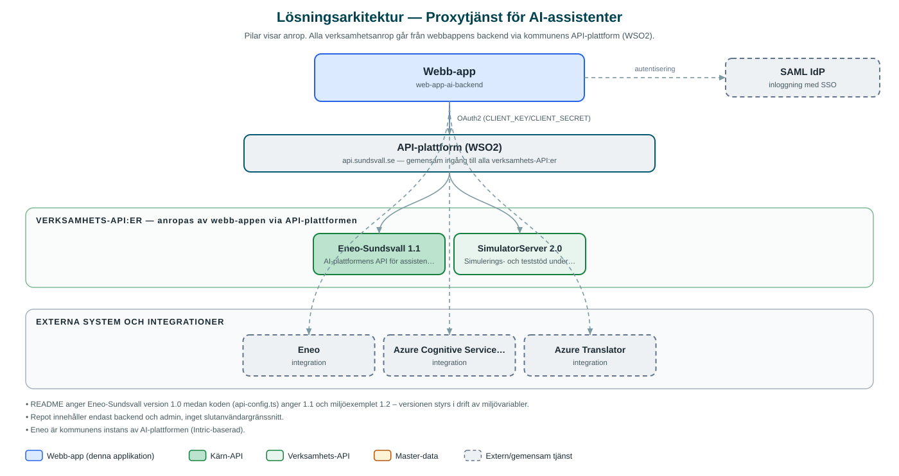

Proxytjänst för AI-assistenter
Gemensam bakomliggande tjänst som förmedlar kommunens applikationers anrop till AI-plattformen Eneo samt vissa Azure-funktioner som tal och översättning.
Om applikationen
Tjänsten fungerar som en mellanhand mellan kommunens applikationer och AI-plattformen Eneo, som nås via kommunens API-gateway. Applikationer kan genom tjänsten arbeta med AI-assistenter, konversationer, kunskapsutrymmen, filer och frågor utan att själva hantera direktåtkomst till AI-plattformen.
Utöver AI-plattformen erbjuder tjänsten även vissa Azure-funktioner, bland annat utfärdande av taltjänst-token (tal-till-text) och maskinöversättning av text.
Anslutande applikationer identifierar sig med API-nycklar som lagras hashade, och det finns ett separat administrationsgränssnitt där behöriga administratörer loggar in med kommunens gemensamma inloggning för att hantera assistenter och åtkomst.
Det här stödjer applikationen
- Förmedling till AI-plattform – Vidarebefordrar anrop om assistenter, konversationer, utrymmen, filer och frågor till Eneo via API-gatewayn.
- API-nyckelhantering – Anslutande applikationer autentiseras med API-nycklar som lagras säkert i hashad form.
- Tal-till-text-stöd – Utfärdar token för Azures taltjänster så att applikationer kan använda taligenkänning.
- Maskinöversättning – Översätter texter via Azures översättningstjänst.
- Administrationsgränssnitt – Webbgränssnitt där administratörer hanterar assistenter, värdar och inställningar.
Teknisk dokumentation
Nedan beskrivs hur applikationen är uppbyggd, vilka API:er den använder och vad som krävs för att driftsätta den. Informationen är härledd ur källkoden och dess konfiguration på GitHub.
Arkitektur

Applikationen består av en webbaserad frontend (Next.js 15, React 19, sk-web-gui (administrationsgränssnitt)) och en backend (Node.js, Express, routing-controllers, TypeScript, Prisma (databas)) som utvecklas i samma kodbas. Verksamhetsanrop går via kommunens gemensamma API-plattform (WSO2) – frontend pratar aldrig direkt med underliggande system. Inloggning: API-nycklar (hashade) för anslutande applikationer; SAML (SSO) för administrationsgränssnittet. Övriga integrationer som förekommer i koden: Eneo, Azure Cognitive Services (tal-till-text), Azure Translator, SAML IdP, WSO2 API-gateway.
Teknikstack
- Frontend: Next.js 15, React 19, sk-web-gui (administrationsgränssnitt)
- Backend: Node.js, Express, routing-controllers, TypeScript, Prisma (databas)
- Test: Jest (backend), Cypress (admin)
API-beroenden
Applikationen konsumerar följande API:er via kommunens API-plattform. Versionerna är hämtade ur källkodens API-konfiguration.
| API | Version | Användning |
|---|---|---|
| Eneo-Sundsvall | 1.1 | AI-plattformens API för assistenter, konversationer, utrymmen och filer (basväg/version konfigurerbar via miljövariabler). |
| SimulatorServer | 2.0 | Simulerings- och teststöd under utveckling. |
Konfiguration och driftsättning
- Backend: .env.example.local med CLIENT_KEY/CLIENT_SECRET för WSO2
- ENEO_BASEPATH, ENEO_VERSION och ENEO_SALT för AI-plattformens anslutning och nyckelhashning
- AZURE_REGION, AZURE_SUBSCRIPTION_KEY och AZURE_TRANSLATOR_KEY för Azure-funktioner
- SAML-inställningar med certifikat och nycklar för administratörsinloggning
- Databas via Prisma med migreringar (bl.a. användarinställningar, assistenter, värdar)
Noterbart ur källkoden
- README anger Eneo-Sundsvall version 1.0 medan koden (api-config.ts) anger 1.1 och miljöexemplet 1.2 – versionen styrs i drift av miljövariabler.
- Repot innehåller endast backend och admin, inget slutanvändargränssnitt.
- Eneo är kommunens instans av AI-plattformen (Intric-baserad).
Källkod
Källkoden är öppen och finns hos Sundsvalls kommun på GitHub. I källkodsförrådet finns även instruktioner för att klona, konfigurera och starta applikationen i egen miljö.